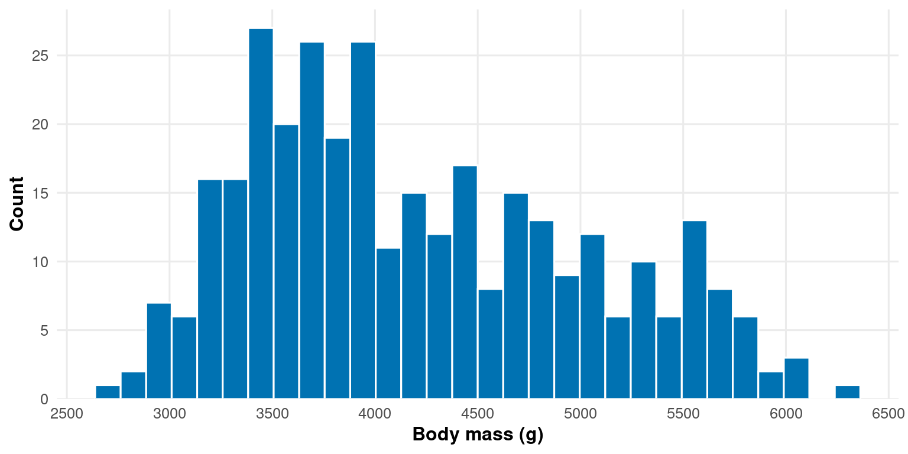
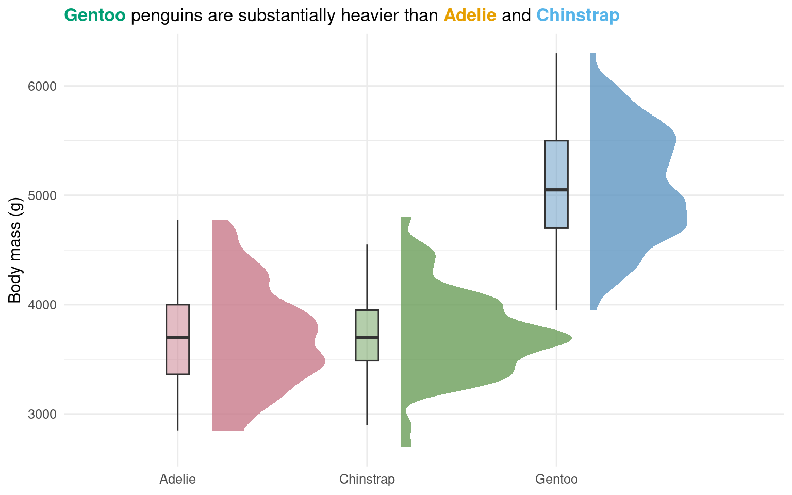

Before you arrive, please install the packages loaded in the setup chunk above. The take-home exercise is to be completed in your own time and reviewed at a follow-up session; you do not need to bring your own data to the workshop itself.
How we see data
Our visual system did not evolve to read graphs. Some visual features are detected before conscious attention engages: a red dot among grey dots, a single triangle in a sea of circles, an unusually large shape in a field of small ones. This is called pre-attentive processing (Healey and Enns, 2012). When designing figures, encoding important information as features the eye picks up automatically directs attention without having to search. Encoding the same information as a subtle change in line style or a slightly different shade requires the reader to look for it.
The encoding hierarchy
Cleveland and McGill (1984) asked a deceptively simple question: how accurately can people read the same ratio when it is encoded in different visual forms? Their answer became the design discipline for the next forty years of statistical graphics. The ranking is not a recommendation; it is the order in which our perceptual system is most accurate.
For continuous variables, the hierarchy from most to least accurate is: position on a common scale, length, angle, area, colour lightness, colour hue, volume. For categorical variables it is different: position remains the most accurate, but colour hue moves up to second place, with shape third. This matters: the rules for assigning encodings to variables are not the same for continuous and categorical data, and this is one of the most common errors in published figures.
The practical rule is: assign your most important variable to the highest-ranked encoding available to you. For two continuous variables, both go to position (a scatter plot). For a continuous variable grouped by a category, position handles the continuous variable and colour hue handles the category — with shape added redundantly for accessibility.
Two continuous variables to position (rank 1), one categorical to colour hue (rank 2) and shape (rank 3) redundantly. The figure works on a colour monitor, in greyscale print, and for a reader with colour vision deficiency. This is the baseline expectation, not an enhancement.
Colour as a tool
Colour is pre-attentive, which makes it the second-most powerful encoding for categorical data. It is also the encoding most often misused. Three palette types exist, each for a different data structure:
Palette type
Data structure
Example use
Categorical
Discrete groups with no inherent order
Species, treatment arm
Sequential
Continuous, running in one direction from a minimum
Gene expression, density
Diverging
Continuous, with a meaningful midpoint
Log fold-change, temperature anomaly
Using the wrong type for the data structure is one of the most common errors. A sequential palette applied to categorical data implies an ordering that does not exist. A categorical palette applied to a continuous variable conceals the ordering that does exist.
The package colorspace (Zeileis et al., 2020) provides palette generators for all three types with documented design rationale, and is the project default for palette construction. The Dark2 palette ships directly:
# Categorical (Dark2) — for discrete groups with no ordercolorspace::swatchplot( colorspace::qualitative_hcl(8, palette ="Dark2"))
The same package provides scale_*_discrete_qualitative(), scale_*_continuous_sequential(), and scale_*_continuous_diverging() functions that integrate directly with ggplot2. Prefer these over manual hex vectors.
Accessibility
Roughly 8% of men have some form of colour vision deficiency (Sharpe et al., 1999); red-green is by far the most common. Using red and green to distinguish two groups will fail for a non-trivial fraction of any audience. The Okabe-Ito palette was designed to remain distinguishable under deuteranopia and protanopia (Okabe and Ito, 2008), and the viridis palette family is perceptually uniform under colour vision deficiency and in greyscale.
Beyond palette choice, the discipline is redundant encoding: never let colour be the only cue distinguishing groups. Use shape redundantly for points, linetype redundantly for lines, and direct labelling wherever it is legible (we will cover direct labelling in Block 3).
The colorBlindness package gives you the verification step. colorBlindness::cvdPlot() produces a five-panel simulation — the original, deuteranopia, protanopia, tritanopia, and a desaturated version — and lets you see whether the figure still works when colour fails.
After the workshop, run cvdPlot() on three or four figures from your own thesis chapter or recent paper. Be honest about which ones fail.
Data-ink ratio
Tufte (1983) introduced data-ink ratio: the proportion of a figure’s visual elements that actually encode data, as opposed to decoration, borders, gridlines, shadows, and three-dimensional effects that exist for their own sake. High data-ink ratio means most of the visual complexity of the figure carries information.
The default ggplot2theme_grey() already fails this test: a grey panel background and white gridlines exist purely as decoration. Move to theme_minimal(), theme_classic(), or a project-specific theme function as a default discipline.
Warning
Avoid theme_grey() (the ggplot2 default) in any figure intended for human consumption. Set theme_minimal(base_size = 12) or theme_classic(base_size = 12) as your project baseline.
Graph crimes
A figure that violates these principles distorts what the data actually say. Five recurring crimes are worth recognising on sight:
Truncated bar chart axes. A bar encodes magnitude as length from a baseline. If the axis does not start at zero, the visual ratio between bars is no longer the data ratio.
Manipulating the y-axis. Compressed or expanded vertical ranges can make tiny effects look enormous or hide real effects.
Cherry-picking time ranges. Choosing a window of time that supports a story while ignoring the surrounding data.
Wrong chart for the data. Pie charts for many categories; line charts for unordered categorical data; dual y-axes pretending two arbitrary scales are commensurable.
Convention violations. Inverted colour scales (light = high); inverted y-axes; latitude on the x-axis. Readers bring expectations and figures that violate them mislead.
A bonus crime: spurious correlation. Two variables with a strong correlation may have no causal relationship at all. Showing a strong correlation without acknowledging the confounders is a misrepresentation of evidence.
Exercise 1: Graph crimes tribunal
Important
You each will be look at two figures. For each one:
Identify the crime. What specifically is wrong with it?
Classify it. Is the crime one of distortion (the visual misrepresents the data) or omission (the figure leaves out something the reader needs)?
Sentence it. What single concrete change would fix it?
Before anything else, the structure of your data determines the chart type. Variable count and variable type narrow the choice. The table below is a guide, not a constraint — your scientific question may demand something else, but you should be able to justify it.
Scatter plot with colour and shape mapped to the discrete variable
Discrete
—
—
Bar chart of counts
Discrete
Continuous
—
Raincloud per group
Discrete
Discrete
—
Heatmap of counts
Discrete
Discrete
Continuous
Heatmap of the continuous variable
Date
Continuous
—
Line chart
Date
Continuous
Discrete
Line chart, one line per group
Several prohibitions are worth committing to memory: no pie charts (use a labelled proportion); no 3D effects of any kind; no dual y-axes (use two panels instead); no dynamite plots (bar charts of means with error bars) where raw data are available — use a raincloud or strip plot (Weissgerber et al., 2015).
Descriptive vs explanatory framing
Every figure communicates at two levels: it presents the data, and it makes an argument. The framing of the title and the legend determines which level the reader engages with first.
A descriptive title states what the figure shows in neutral language: “Body mass of three penguin species in the Palmer Archipelago”. The reader is shown the data and invited to interpret.
An explanatory title states what the figure means: “Gentoo penguins are substantially heavier than Adelie and Chinstrap”. The reader is told the conclusion and invited to verify it from the data.
Neither is wrong. The choice is determined by the audience. Journal figures and lab reports use descriptive framing because the reader is expected to bring their own judgement and the figure legend below carries the necessary methodological detail. Talks, posters, and public engagement use explanatory framing because the reader has limited time, attention, or technical background to derive the conclusion themselves.
Audience design
The same finding becomes a different figure for different audiences. The table below summarises the design choices that should change with context:
Element
Journal / lab report
Poster
Talk
Public engagement
Title above figure
No
Yes (explanatory)
Yes (explanatory)
Yes (explanatory)
Figure legend below
Yes (four elements)
Optional, abbreviated
No
No
Direct labelling
Where it does not break convention
Yes
Yes
Yes
Highlighting (grey out non-focal groups)
No
Yes
Yes
Yes
Reference lines and annotations
Sparingly
Yes
Yes
Yes
Statistical detail
Precise p-values where shown
Abbreviated
One key result
None or one sentence
Base font size
12pt (floor)
16–20pt
14–18pt
14–18pt
Raw data shown
Always where n permits
Always
Always
Where it clarifies
What changes is not the standard — every figure must remain honest and accessible — but the design choices needed to communicate to that audience.
Exercise 2: Same data, four audiences
Important
You have one finding:
Gentoo penguins are substantially heavier than Adelie and Chinstrap penguins
Discuss how you might change your graph in these four scenarios:
Journal figure (specialist reader, no time pressure)
Conference poster (3 seconds to attract, 2 minutes to engage)
Seminar slide (audience cannot control viewing time)
Museum infographic (non-specialist, no assumed technical knowledge)
Try and create four different graphs using the penguins dataset.
Day 3 Block 3: Themes and scales
Two foundational pieces of ggplot2 sit between the figure construction and the figure looking the way you want: themes (how the non-data elements appear) and scales (how the data axes are formatted). Mastery of both transforms what your figures look like without changing what they show. This block establishes the patterns we will then use throughout Block 4.
Themes
A complete theme controls every non-data visual element: panel backgrounds, gridlines, text styling, axis ticks, margins, legend appearance. ggplot2 ships several complete themes; we have already used theme_minimal() in earlier examples. The ones worth knowing:
Theme
When to use
theme_minimal()
Default for most figures. Clean panel, retained gridlines, no panel border.
theme_classic()
Traditional scientific look. Axis lines, no gridlines, no panel border.
theme_bw()
Black-and-white panel with thin border and gridlines.
theme_void()
Strip everything. Useful for maps and bespoke composed layouts.
theme_grey()
The ggplot2 default. Do not use this. The grey panel background fails the data-ink test.
The base_size argument sets the text size for every text element in the figure proportionally. Setting theme_minimal(base_size = 12) once is preferable to setting axis.text = element_text(size = 12) and twelve similar lines: every text element will scale together when you change base_size for a different audience.
Local modifications with theme()
The theme() function makes local modifications on top of any complete theme. Inside theme(), every named argument is a visual element of the figure and takes an element_*() function:
element_text() for text elements (titles, axis labels, legend text)
element_rect() for rectangular backgrounds (panel, plot, legend, strip)
element_line() for lines (gridlines, axis lines, tick marks)
The rel() function sets a size relative to base_size. rel(1.2) means “1.2 times the base text size”, which adjusts automatically when you change base_size. Use rel() for any text size you set inside theme(); use absolute sizes only when you need to override the relationship.
A project theme function
If you make the same theme modifications in every script, wrap them in a function. This is what the pub-figures skill refers to as theme_project():
Now every figure in the project uses theme_project() and changes to your house style propagate everywhere without editing individual scripts. Save the function in R/functions/plot_functions.R and source it at the top of any script that produces figures.
Theme demonstration: same data, four themes
The case for moving away from theme_grey() is more persuasive shown than argued. The figure below renders the same scatter plot four times: once with the ggplot2 default, once with theme_minimal(), once with theme_classic(), and once with our custom theme_project(). Look at each in turn and ask which one most clearly serves the data.
Reflection — Tufte’s data-ink ratio. Edward Tufte (1983) proposed that the ratio of data-ink to total-ink in a figure should be high: most of the visible pixels should encode data, not decoration. Look at the four panels above and ask, for each one, which visual elements carry information about the data, and which are just visual noise. The grey background panel of theme_grey() does not encode anything; the panel border in some themes does not encode anything; the minor gridlines may or may not, depending on whether the reader is reading off precise values. Polish is a discipline. The discipline is to remove anything that does not encode data, until removing more would damage readability.
The theme_project() panel is the most restrained of the four; it removes the grey background, the minor gridlines, and the legend at the top-right; bolds the axis titles for slight emphasis; and places the legend below the panel where it does not compete with the data for the reader’s primary axis of attention. Each of these choices is defensible against the data-ink principle.
Audience-appropriate base_size
The audience matrix in Block 2 specified base font sizes for different reading contexts. Translated into theme_project() calls:
Audience
base_size argument
Journal / lab report
theme_project(base_size = 12) (floor)
Conference poster
theme_project(base_size = 18)
Seminar talk
theme_project(base_size = 16)
Public engagement
theme_project(base_size = 16)
Warning
Setting individual text element sizes (axis.text = element_text(size = 14)) without adjusting base_size leaves other text elements at the default. The result is a figure with mismatched text sizes that looks unbalanced. Always change base_size first; tweak individual elements only as deliberate exceptions.
Scales
Where themes control the non-data parts of the figure, scales control how the data axes are rendered. Axes are position encodings, the most accurate visual channel in the encoding hierarchy from Block 1 — yet the breaks and labels chosen by ggplot2 by default often undermine that accuracy by placing ticks at awkward intervals or formatting numbers in ways that obscure them. The scales package gives you the tools to fix this.
penguins_complete |>ggplot(aes(x = body_mass_g)) +geom_histogram(bins =30, fill ="#0072B2", colour ="white") +scale_x_continuous(breaks = scales::breaks_pretty(n =6) ) +scale_y_continuous(breaks = scales::breaks_pretty(n =5),expand =expansion(mult =c(0, 0.05)) ) +labs(x ="Body mass (g)", y ="Count") +theme_project()

The expansion(mult = c(0, 0.05)) argument adds no padding at the bottom (so bars sit on the axis) and 5% padding at the top (so the tallest bar does not touch the upper edge). This is the convention for bar charts and histograms.
Label functions
Number formatting matters. Thousands separators, percentage signs, properly formatted p-values, and currency prefixes are all small touches that distinguish a polished figure from a draft. The scales package provides label functions for each:
penguins_complete |>count(island) |>mutate(prop = n /sum(n)) |>ggplot(aes(x =fct_reorder(island, prop), y = prop)) +geom_col(fill ="#0072B2") +scale_y_continuous(breaks = scales::breaks_pretty(n =5),labels = scales::label_percent(accuracy =1),expand =expansion(mult =c(0, 0.05)) ) +labs(x =NULL, y ="Proportion of sampled penguins") +theme_project() +coord_flip()
Two improvements over the default: y-axis labels render as 30% rather than 0.3, and the breaks sit at sensible round percentages rather than at arbitrary values like 0.275. Both changes happen entirely in the scale_* call; the data are not modified.
Demonstration: before and after
The cumulative effect of theme and scale choices is easier to see than to describe. The figure below shows the same data twice — first with ggplot2 defaults, then with theme_project() and scales::label_*() applied. The data are identical; only the styling has changed.
base_data <- penguins_complete |>count(island) |>mutate(prop = n /sum(n))p_default <- base_data |>ggplot(aes(x = island, y = prop)) +geom_col() +labs(x ="Island", y ="prop", title ="Default theme and scales")p_improved <- base_data |>ggplot(aes(x =fct_reorder(island, prop), y = prop)) +geom_col(fill ="#0072B2") +scale_y_continuous(breaks = scales::breaks_pretty(n =5),labels = scales::label_percent(accuracy =1),expand =expansion(mult =c(0, 0.05)) ) +labs(x =NULL, y ="Proportion of sampled penguins",title ="theme_project() and scales::label_percent()") +theme_project()p_default + p_improved
Three concrete changes between the panels: the y-axis labels render as percentages, the bars are ordered (by fct_reorder) rather than alphabetical, and the grey panel background is gone. The data-ink ratio has improved without altering a single number.
Log scales
When a variable spans more than two orders of magnitude, transform to log. The scales package handles both breaks and labels:
label_log() formats the labels as 10^1, 10^2, and so on — the proper notation for log-scaled data. The figure should also state the log transformation in either the axis title or the legend so the reader does not misread the scale as linear.
Note
Why this matters. A figure built with theme_project() and properly formatted scales::label_*() functions reads as professionally produced even if the underlying analysis is straightforward. A figure with theme_grey() and default axis labels reads as a draft even if the analysis is sophisticated. Polish is a discipline, not an embellishment.
Note
Break (15 minutes). Energy is high after the participatory exercises in Blocks 1 and 2 and the coding-focused Block 3. The remaining blocks are coding-heavy and benefit from fresh attention.
Day 3 Block 4: Extensions in action
The base ggplot2 grammar covers most of the chart types but leaves several common visualisation needs awkward. Four extension packages plug the gaps directly:
ggdist for distributional plots (raincloud, half-eye, point-interval) — this is the implementation of “show the raw data wherever sample size permits” from Block 1.
colorspace and colorBlindness for palettes and accessibility checking — these operationalise the encoding hierarchy (Block 1) and the accessibility principle (Block 1).
ggrepel and ggtext for direct labelling and rich text — these are the toolkit for the direct labelling and highlighting techniques in the audience matrix (Block 2).
patchwork for multi-panel composition — the natural alternative to facet_wrap() when subplots differ in chart type rather than data subset.
Statistical annotation (significance brackets, p-value labels on figures) is not covered in this workshop. The principled approach is to fit a model with emmeans or equivalent and use ggpubr::stat_pvalue_manual() to render the contrasts; the relevant skill file documents the canonical pattern. For a half-day workshop covering the visualisation principles, statistical annotation has been left to the wider statistical training in your programme.
Each segment below follows the same pattern: a brief problem statement, a worked example that the facilitator walks through with running commentary, and a short try later note pointing to a modification you can attempt in your own time. Participants are encouraged to run each code chunk in their session as the facilitator walks through it; the active modifications are deliberately deferred so that the in-session pace stays brisk and the cognitive load of typing under time pressure is removed. The deferred tasks are written out in full in an In your own time subsection at the end of each segment, with collapsed solutions for self-marking.
Distributions with ggdist
The default way to summarise a continuous variable across groups is a boxplot. A boxplot is informative but lossy: it shows quartiles and outliers but conceals the shape of the underlying distribution. Bimodality, skew, and gaps in the data all vanish.
The raincloud plot (Allen et al., 2021) addresses this by combining three layers: a half-density (the “cloud”) to show distribution shape, a slim boxplot for summary statistics, and jittered points (the “rain”) for the raw data. ggdist::stat_halfeye() provides the cloud half.
Three things to notice. First, the cloud, the box, and the points are three separate layers stacked in a specific order — clouds at the back, box in the middle, points on top. Second, justification = -0.2 shifts the cloud off the centre line so the box and points sit beside it rather than underneath. Third, the boxplot’s outlier points are hidden with outlier.shape = NA because all the raw data are already shown as jittered points; leaving them on would double-count.
Tip
Try later. Swap the geom_boxplot() layer for ggdist::stat_pointinterval() and observe the change. stat_pointinterval shows the median and two intervals (by default, 50% and 95%); look at the function help to see how to control which intervals are drawn.
The raincloud applies the “show the raw data wherever sample size permits” principle from Block 1 directly: the cloud shows distribution shape, the box shows summary statistics, and the jittered points show every individual observation. No information is hidden behind a summary.
In your own time
Important
Modify the worked example to flip the orientation (raincloud horizontal rather than vertical) and to use ggdist::stat_pointinterval() instead of the boxplot. stat_pointinterval shows the median and a range — work out from the documentation what range it shows by default.
Accessible colour with colorspace and colorBlindness
The principles from Block 1 are operationalised by two packages. colorspace constructs the palette; colorBlindness verifies it. Use the pair together — palette without verification leaves accessibility to chance.
The five-panel grid shows: the original, deuteranopia, protanopia, tritanopia, and a desaturated version. The figure passes if all groups remain distinguishable in all five panels. If any panel fails — typically deuteranopia or protanopia for red-green sensitive figures — strengthen the redundant encoding (shape or linetype), choose a more separated palette, or fall back to direct labelling.
Tip
Try later. Build the same scatter plot withoutshape = species in the mapping, and rerun cvdPlot(). Compare the two outputs honestly. The greyscale panel is the most revealing: groups distinguishable only by colour collapse to indistinguishable shades of grey.
This segment is the encoding hierarchy from Block 1 made operational: position handles the two continuous variables (rank 1), colour hue handles the categorical (rank 2 for categorical data), and shape is added redundantly (rank 3) so that the figure does not depend on colour alone.
In your own time
Important
Build a scatter plot from penguins_complete using only bill_length_mm and bill_depth_mm, colour mapped to species, and without shape mapped redundantly. Run colorBlindness::cvdPlot(). Now add shape = species to the mapping and rerun. Compare the two outputs honestly. Which encoding survives the desaturation test?
The figure with redundant shape encoding survives the desaturated panel because the shape carries the species information when the colour information collapses. The figure without redundant encoding becomes unreadable in greyscale.
Direct labelling with ggrepel and ggtext
A figure legend separates the colour key from the data: the reader’s eye has to travel from the data layer to the legend and back, holding a mapping in working memory. Direct labelling puts the group name on the data itself, so the eye reads the label as part of the data. For talks, posters, and public engagement, direct labelling is almost always clearer.
The challenge is that labels placed at data points overlap each other. ggrepel::geom_text_repel() solves this by moving labels iteratively until they no longer collide, with connector lines preserved.
# Label location: one label per species at the species centroidlabel_data <- penguins_complete |>group_by(species) |>summarise(x =median(bill_length_mm),y =median(flipper_length_mm),.groups ="drop")penguins_complete |>ggplot(aes(x = bill_length_mm, y = flipper_length_mm, colour = species)) +geom_point(alpha =0.5, size =1.5) + ggrepel::geom_label_repel(data = label_data,aes(x = x, y = y, label = species, colour = species),size =5,fontface ="bold",label.size =0,inherit.aes =FALSE ) + colorspace::scale_colour_discrete_qualitative(palette ="Dark2") +labs(x ="Bill length (mm)", y ="Flipper length (mm)") +theme_minimal(base_size =12) +theme(legend.position ="none")
ggtext is the companion package for rich text: it allows markdown formatting inside titles, axis labels, and legend entries, and supports inline colour. This is what lets you write a title like "**Gentoo** penguins are <span style='color:#009E73;'>**substantially heavier**</span> than Adelie and Chinstrap" directly. To enable rich text on a theme element, set it to ggtext::element_markdown().
penguins_complete |>ggplot(aes(x = species, y = body_mass_g, fill = species)) + ggdist::stat_halfeye(adjust =0.5, justification =-0.2,.width =0, point_colour =NA, alpha =0.8) +geom_boxplot(width =0.12, outlier.shape =NA, alpha =0.5,colour ="grey20") + colorspace::scale_fill_discrete_qualitative(palette ="Dark2") +labs(title ="<span style='color:#009E73;'>**Gentoo**</span> penguins are substantially heavier than <span style='color:#E69F00;'>**Adelie**</span> and <span style='color:#56B4E9;'>**Chinstrap**</span>",x =NULL,y ="Body mass (g)" ) +theme_minimal(base_size =12) +theme(legend.position ="none",plot.title = ggtext::element_markdown(size =13, lineheight =1.2))

Inline colour in the title removes the need for a separate legend entirely. The colours in the title match the fills in the data, and the reader makes the mapping in a single saccade.
Tip
Try later. Modify the rich-text title so that only Gentoo is highlighted in colour and the other species names appear in plain text. Add a subtitle (using ggtext::element_markdown() on plot.subtitle) that gives the sample sizes for each species. Inline colour in subtitles works the same way as in titles.
These techniques are the practical implementation of the direct labelling and highlighting rows in the audience matrix from Block 2. Direct labelling and inline-coloured titles are the toolkit you reach for when designing for posters, talks, or public engagement — contexts where the reader cannot afford the eye-travel to a separate legend.
In your own time
Important
Take the rich-text title in the worked example and modify it so that only Gentoo is highlighted in colour (in #009E73), and the other two species names appear in plain text. Then add a subtitle that gives the sample sizes for each species. The subtitle should also be rich text, so you will need to set plot.subtitle = ggtext::element_markdown() in theme().
For panels showing the same chart type for different subsets of the data, use facet_wrap() or facet_grid(). For panels showing different chart types or different aspects of one analysis, use patchwork.
Three defaults apply for patchwork compositions: collect legends into a single shared legend, tag panels with uppercase letters, and use an explicit design = string for the layout. The string is self-documenting; you can rearrange the layout by editing the letters without rewriting the composition call.
p1 <- penguins_complete |>ggplot(aes(x = species, y = body_mass_g, fill = species)) + ggdist::stat_halfeye(adjust =0.5, justification =-0.2,.width =0, point_colour =NA, alpha =0.8) +geom_boxplot(width =0.12, outlier.shape =NA, alpha =0.5) + colorspace::scale_fill_discrete_qualitative(palette ="Dark2") +labs(x =NULL, y ="Body mass (g)") +theme_minimal(base_size =11)p2 <- penguins_complete |>ggplot(aes(x = bill_length_mm, y = bill_depth_mm,colour = species, shape = species)) +geom_point(alpha =0.7) + colorspace::scale_colour_discrete_qualitative(palette ="Dark2") +labs(x ="Bill length (mm)", y ="Bill depth (mm)") +theme_minimal(base_size =11)p3 <- penguins_complete |>count(species, island) |>ggplot(aes(x = species, y = n, fill = island)) +geom_col(position ="dodge") + colorspace::scale_fill_discrete_qualitative(palette ="Set 2") +labs(x =NULL, y ="Count") +theme_minimal(base_size =11)# Edit the letter grid below to rearrange panels.# Letters refer to plots in the order they are added (A = p1, B = p2, C = p3).layout <-"ABCC"p1 + p2 + p3 + patchwork::plot_layout(design = layout, guides ="collect") + patchwork::plot_annotation(tag_levels ="A") &theme(legend.position ="bottom",plot.tag =element_text(face ="bold", size =12))
The & operator applies its right-hand side to every subplot, including those added later — use it for global theme settings like legend position and tag formatting. The + operator applies only to the most recently added subplot.
Tip
Try later. Change the layout string so that panels A and C are stacked on the left and panel B occupies the full right column ("AB\nCB\n"). Then remove guides = "collect" and observe what happens: each subplot’s legend renders independently and the figure becomes cluttered.
Multi-panel composition is the workhorse for figures that combine multiple aspects of one analysis into a single deliverable. A typical journal “Figure 1” with three panels labelled A, B, C is almost always a patchwork composition, not a facet_wrap(). The layout string makes the composition editable: a reviewer who asks you to rearrange the panels does not require you to rewrite the code, only to edit the letters.
In your own time
Important
Take the three-panel composition from the worked example. Change the layout string so that panel A spans the entire top row, and panels B and C share the bottom row. Then change tag_levels = "A" to tag_levels = "i" (lowercase Roman numerals) and observe the change. Finally, change tag_levels to c("A", "i") for nested tagging and see what happens.
TipSolution
layout <-"AABC"p1 + p2 + p3 + patchwork::plot_layout(design = layout, guides ="collect") + patchwork::plot_annotation(tag_levels ="A") &theme(legend.position ="bottom",plot.tag =element_text(face ="bold", size =12))# With lowercase Roman numeral tagsp1 + p2 + p3 + patchwork::plot_layout(design = layout, guides ="collect") + patchwork::plot_annotation(tag_levels ="i") &theme(legend.position ="bottom",plot.tag =element_text(face ="bold", size =12))# Nested tagging is for compositions of compositions; with a single# layer of subplots, c("A", "i") behaves the same as "A".
Day 3 Block 5: Saving figures correctly
The on-screen plot pane is rarely the same physical size as the saved figure. A font that looks correct at 10pt in the RStudio viewer will appear smaller in the saved PDF because the viewer renders at 72 dpi and the PDF embeds at the dimensions you specify. This is the single most common source of “the figure looks fine on my screen but is unreadable in the manuscript” problems.
Two extensions and one discipline solve this.
ggview for canvas-size preview
ggview (Domin, 2025) adds a canvas() layer to the plot. The preview then renders at the dimensions the file will be saved at, so what you see is what you save.
fig <- penguins_complete |>ggplot(aes(x = species, y = body_mass_g, fill = species)) + ggdist::stat_halfeye(adjust =0.5, justification =-0.2,.width =0, point_colour =NA, alpha =0.8) +geom_boxplot(width =0.12, outlier.shape =NA, alpha =0.5) + colorspace::scale_fill_discrete_qualitative(palette ="Dark2") +labs(x =NULL, y ="Body mass (g)") +theme_minimal(base_size =12) +theme(legend.position ="none") + ggview::canvas(width =7, height =5, units ="in", dpi =300)# Print displays the figure at the canvas sizeprint(fig)# save_ggplot uses the canvas dimensionsggview::save_ggplot( fig, here::here("outputs", "figures", "fig01_body_mass.png"))
For one-off iteration, canvas() is lighter than the older camcorder package, which auto-saves every plot to disk. Use camcorder only when you specifically want a session-wide recording or a GIF of your iteration history.
The ragg graphics device
ggsave() is the interface for writing figures; under the hood it calls a graphics device to do the rendering. For raster output (PNG, JPG, TIFF), ragg::agg_png is the modern recommended device because it renders text with better antialiasing, accesses system fonts without extrafont or showtext, and — importantly for version control — writes no timestamp into the file. Identical code produces byte-identical output, so git diff works as expected.
To set ragg as the plot pane backend in Positron or RStudio (≥1.4), go to Settings → Graphics → Backend: AGG. For Quarto documents, set knitr::opts_chunk$set(dev = "ragg_png") in the setup chunk.
The two-format default
Save publication figures in two formats:
PDF for inclusion in LaTeX manuscripts and final journal submission. Vector, infinitely scalable, the default for serious typesetting.
PNG at 300 dpi via ragg::agg_png for slides, posters, and quick previews.
bg = "white" is needed for PNG output because the ggplot2 default is transparent, which causes display issues in many viewers.
Warning
Always specify width, height, units, and dpi explicitly. Never rely on ggsave() defaults. The defaults rarely match the dimensions of the figure you actually want.
Day 3 Block 6: Writing figure legends
A figure for a journal or lab report is not complete without its legend. The legend exists so that the figure can be understood without the reader returning to the body text. The discipline is to write it as four elements, always in this order.
The four elements
Descriptive sentence. What the figure shows, stated neutrally. Past tense.
Methods and sample. Data source with citation; sample sizes per group; exclusions.
Statistical model and result. The test, the test statistic with degrees of freedom, the exact or appropriately-bounded p-value, what the annotations represent. Adjustment method named.
Visual components defined. Every layer on the figure (density, boxplot, points, error bars, lines, brackets, asterisks, colours, shapes) defined explicitly.
Good and bad legends
For each of the four elements, a good and a bad example. The bad examples cluster around two failure modes: vagueness (omitting details the reader needs) and category confusion (writing a result where a description is wanted, or a name where a definition is wanted).
Element 1 — Descriptive sentence:
Verdict
Example
Good
Body mass of three penguin species in the Palmer Archipelago, Antarctica.
Bad
Gentoo penguins are heavier. (This is a result, not a description. Belongs in the body text or as an explanatory title.)
Bad
Penguin data. (Too vague: which penguins? which variable?)
Element 2 — Methods and sample:
Verdict
Example
Good
Data are from the Palmer Penguins dataset (Horst, Hill and Gorman, 2020); observations with missing body mass were excluded, giving final sample sizes of 151 Adelie, 68 Chinstrap, and 124 Gentoo individuals.
Bad
Data from a survey. (No source, no sample size, no exclusions.)
Bad
n = 343. (Total only; per-group sample sizes are missing, and the source and exclusion criteria are not stated.)
Element 3 — Statistical model and result:
Verdict
Example
Good
A one-way ANOVA indicated a significant effect of species on body mass (F(2, 340) = 343.6, p < 0.001). Pairwise contrasts were Tukey-adjusted.
Bad
Species differed significantly. (No test, no test statistic, no degrees of freedom, no p-value, no adjustment method.)
Bad
ANOVA showed differences (p < 0.05). (Test named but no F-statistic; reports a threshold rather than the exact p-value; no multiple-comparisons adjustment named.)
Note: if the figure is descriptive only and no statistical test has been performed, this element should be omitted entirely rather than fabricated. State this explicitly only if the reader might otherwise expect a test (for example, in a paper where every other figure has one).
Element 4 — Visual components defined:
Verdict
Example
Good
The shaded region shows a kernel density estimate of the distribution; the central box shows the interquartile range with the median indicated by a horizontal line and whiskers extending to 1.5 × IQR; individual observations are displayed as jittered points.
Bad
Shows a raincloud plot. (Names the type but defines nothing.)
Bad
Boxplots of body mass. (Misnames the figure — it is not a boxplot — and defines none of the layers.)
A worked example
Note
Figure 1. Body mass (g) of three penguin species (Pygoscelis adeliae, P. chinstrap, and P. papua) in the Palmer Archipelago, Antarctica. Data are from the Palmer Penguins dataset (Horst, Hill and Gorman, 2020); observations with missing body mass values were excluded, giving final sample sizes of 151 Adelie, 68 Chinstrap, and 124 Gentoo individuals. The shaded region shows a kernel density estimate of the distribution; the central box shows the interquartile range with the median indicated by a horizontal line; individual observations are displayed as jittered points.
This legend uses three of the four elements (descriptive sentence, methods and sample, visual components). The statistical-model element is omitted because the figure is descriptive — no model has been fitted to these data. Were a model present, the third element would sit between methods and visual components.
Exercise 3: Write a legend
Important
Write a complete figure legend for the raincloud plot produced in the ggdist segment of Block 4 (the one comparing body mass across the three species). Use the four-element structure; the figure is descriptive, so element 3 (statistical model) is omitted. Aim for a single paragraph.
When you have finished, check these yourself:
Could you understand the figure from the legend alone?
Are the sample sizes stated per group, not just as a total?
Is the data source cited?
Are all three visual layers (cloud, boxplot, points) defined explicitly?
Is the language past-tense and free of result claims?
Let’s show the group some figure legends - type them in chat.
Day 3 Block 7: Three questions for every figure
Every figure you produce, in every context, should answer three questions. If it cannot, it is not finished.
Does the visual impression match the data? Honest axes, appropriate encoding, no distortion. The reader should reach the same conclusion from the figure that they would reach from the underlying numbers.
Who is the audience and does the design serve them? Complexity, annotation density, and font size calibrated to the reader. A journal figure is not a poster figure is not a public engagement figure.
Is the figure self-contained? Labels, units, a legend that defines every visual layer, and ideally the script that produced it, so a future reader (including yourself) can reconstruct what you did and why.
These three questions are the standard. The principles, the extensions, and the discipline of this workshop are all in service of being able to answer yes to each one.
Take-home exercise
The workshop has given you the principles, the extensions, and the discipline. The integration — applying everything to your own data — is now homework. The aim is to produce one publication-ready figure from a dataset you brought, using the techniques from Blocks 1 to 6.
The task
Choose a dataset from your own research with at least one continuous variable, one categorical grouping, and a sample size of at least thirty observations. Produce one publication-ready figure that applies the principles and extensions from this workshop:
Block 1. Variable types determine the chart. Honest axes. Accessible palette via colorspace. The encoding hierarchy applied — most important variable to position, most important categorical to colour hue with shape redundantly.
Block 2. Audience-appropriate framing — pick journal/lab report unless you have a specific other audience in mind. Descriptive title and full legend.
Block 3. A theme_project() (or equivalent) applied; scales formatted with scales::breaks_pretty() and an appropriate scales::label_*() function for the units.
Block 4. At least one extension used appropriately (raincloud distribution display, direct labelling with ggrepel or ggtext, or multi-panel composition with patchwork).
Block 6. Write the four-element figure legend (or three-element if no statistical model has been fitted).
A skeleton to adapt
# !! PARTICIPANT: replace the data load with your own file.my_data <- readr::read_csv(here::here("data", "my_data.csv"))# Source the project theme function defined in Block 3# (paste theme_project() into R/functions/plot_functions.R first)source(here::here("R", "functions", "plot_functions.R"))# Build the figure using the patterns from Blocks 1-4.# Example structure (modify to match your variables and audience):my_figure <- my_data |> tidyr::drop_na(<your_continuous_var>, <your_grouping_var>) |> ggplot2::ggplot(ggplot2::aes(x =<your_grouping_var>,y =<your_continuous_var>,fill =<your_grouping_var>)) + ggdist::stat_halfeye(adjust =0.5, justification =-0.2,.width =0, point_colour =NA, alpha =0.8) + ggplot2::geom_boxplot(width =0.12, outlier.shape =NA, alpha =0.5) + colorspace::scale_fill_discrete_qualitative(palette ="Dark2") + ggplot2::scale_y_continuous(breaks = scales::breaks_pretty(n =6) ) + ggplot2::labs(x =NULL, y ="<Variable name (unit)>") +theme_project(base_size =12) + ggplot2::theme(legend.position ="none")# Verify accessibility before savingcolorBlindness::cvdPlot(my_figure)# Save in both formatsggplot2::ggsave(filename = here::here("outputs", "figures", "my_figure.pdf"),plot = my_figure,width =7, height =5, units ="in")ggplot2::ggsave(filename = here::here("outputs", "figures", "my_figure.png"),plot = my_figure,width =7, height =5, units ="in",dpi =300, device = ragg::agg_png, bg ="white")
Tip
If your figure passes colorBlindness::cvdPlot() and the legend would let someone understand it without the manuscript text, you have met the standard. If either fails, fix it before submitting.
Further reading and references
Allen, M., Poggiali, D., Whitaker, K., Marshall, T.R., van Langen, J. and Kievit, R.A. (2021) Raincloud plots: a multi-platform tool for robust data visualization. Wellcome Open Research, 4, 63.
Cleveland, W.S. and McGill, R. (1984) Graphical perception: theory, experimentation, and application to the development of graphical methods. Journal of the American Statistical Association, 79(387), 531–554.
Cumming, G., Fidler, F. and Vaux, D.L. (2007) Error bars in experimental biology. Journal of Cell Biology, 177(1), 7–11.
Healey, C.G. and Enns, J.T. (2012) Attention and visual memory in visualization and computer graphics. IEEE Transactions on Visualization and Computer Graphics, 18(7), 1170–1188.
Horst, A.M., Hill, A.P. and Gorman, K.B. (2020) palmerpenguins: Palmer Archipelago (Antarctica) penguin data. R package, https://allisonhorst.github.io/palmerpenguins/
Okabe, M. and Ito, K. (2008) Color Universal Design (CUD). https://jfly.uni-koeln.de/color/
Sharpe, L.T., Stockman, A., Jägle, H. and Nathans, J. (1999) Opsin genes, cone photopigments, color vision and color blindness. In Color Vision: From Genes to Perception, 3–51.
Tufte, E.R. (1983) The Visual Display of Quantitative Information. Graphics Press.
Weissgerber, T.L., Milic, N.M., Winham, S.J. and Garovic, V.D. (2015) Beyond bar and line graphs: time for a new data presentation paradigm. PLOS Biology, 13(4), e1002128.
Wilke, C.O. (2019) Fundamentals of Data Visualization. O’Reilly Media. https://clauswilke.com/dataviz/
Zeileis, A., Fisher, J.C., Hornik, K., Ihaka, R., McWhite, C.D., Murrell, P., Stauffer, R. and Wilke, C.O. (2020) colorspace: A toolbox for manipulating and assessing colors and palettes. Journal of Statistical Software, 96(1), 1–49.